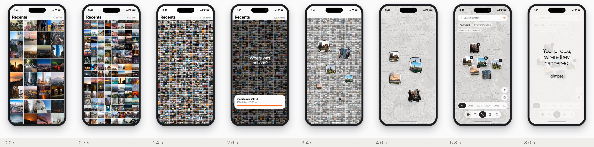

Two new Glimpse videos
Drawn from the storyboards, with the real Cosmos screens (Your world over Boston, the map, the tab bar) captured from the running app. 60 fps, 800 × 1488, the same phone and mask as the current videos. Nothing on the site uses them yet.
Camera roll → map, frame by frame

Your world, filling in, frame by frame

The pause on 23.0 GB, full size (held 4.05–5.55 s)

The Americas (7.6 s), Europe and Africa (8.75 s), Asia and Australia (10.1 s), full size